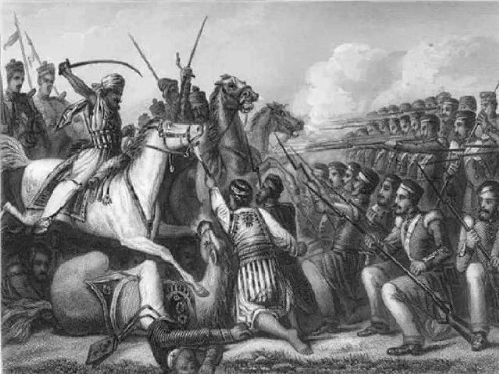

The Battle Of Buxar (1764)
Battle of Buxar was a conflict at Buxar in northeastern India between the forces of the British East India Company, commanded by Major Hector Munro, and the combined army of an alliance of Indian states including Bengal, Awadh, and the Mughal Empire. This decisive battle confirmed British power over Bengal and Bihar after their initial success at the Battle of Plassey in 1757 and marked the end of the attempt to rule Bengal through a puppet nawab. Some of its results are:-
- British became the true holders of control over the provinces of Bihar, Bengal and Odisha
- It established the framework for British control in India
- The War led to the signing of the famous 'Treaty of Allahabad'
How it Started
The Nawab disagrees
The British appointed Mir Jafar Ali Khan Bahadur as the Nawab of Bengal following the Battle of Plassey (23 June 1757). He was not an effective leader. In the East India Company's hands, he was nothing more than a puppet. The country suffered greatly as a result of Mir Jafar and Robert Clive's conspiracy. Now, the company is openly meddling in Bengal's internal issues. The corporation did not like it when he complained. He also didn't meet the demanding financial requirements of the business. So, Mir Jafar was overthrown, and his son-in-law, Mir Qasim, was named the Nawab in October 1760. Mir Qasim repaid the British by giving them the zamindari of the districts of Chittagong, Burdwan (Barddhaman), and Midnapore (Medinipur) in exchange.
Mir Qasim was a competent governor of Bengal. As soon as he understood how serious the situation was, he moved his capital from Murshidabad to Monghyr. Now, not only the company's generals and officers but also the servants were taking advantage of trade concessions to increase their wealth. The dastaks, or free passes, were used by company officials for their items and were also sold to Indian traders. As a result, the Nawab's income decreased, which harmed the upstanding Indian merchants. To put an end to these unethical practices, Mir Qasim made the drastic decision to abolish all internal trade taxes, making the trading conditions for British and Indian merchants equal.
The British viewed the elimination of internal responsibilities as a breach of their unique rights and privileges. As a result, the British and Mir Qasim fought several battles in 1763. As a result of repeated British victories, Mir Qasim retreated to Awadh. There, he allied with Shah Alam II (also known as Ali Gohar or Ali Gauhar, 1728–1806) of the Mughal Empire and Nawab Shuja-ud-daulah of Awadh (1732–1775). On October 22, 1764, the united forces of the three confronted the English led by Sir Hector Munro (1726–1805) at Buxar in western Bihar (about 130 kilometers west of Patna), where they were soundly routed.
There were 17,072 soldiers in the British army fighting, including 1859 British, 5,297 Indian sepoys, and 9189 Indian cavalries. Over 40,000 soldiers were said to be in the alliance army. Other reports claim that a British force of 10,000 men beat a united army of 10,000 men made up of the Mughals, Awadh, and Mir Qasim. After the Battle of Buxar, the Nawabs increased their military might. Their resounding defeat was brought on by the three main, different partners' basic lack of coordination.
At dawn, Major Hector Munro was attacked by Mirza Najaf Khan, who was in charge of the right wing of the Mughal imperial forces. The British lines quickly formed and stopped the Mughals' advance. The British claimed that the Durrani and Rohilla cavalry participated in the conflict and engaged in some skirmishes. However, the combat was ended by noon, and Shuja-ud-Daula detonated three enormous stocks of gunpowder in addition to many gigantic tumbrils.
The Mughal Grand Vizier Shuja-ud-Daula, the Nawab of Awadh, retaliated by blowing up his boat bridge after crossing the river, leaving the Mughal Emperor Shah Alam II and soldiers of his regiment. Munro separated his force into several columns and specifically followed him. Along with his 3 million rupees worth of jewels, Mir Qasim also ran away and perished in poverty in 1777. Shah Alam II withdrew from and then decided to negotiate with the triumphant British when Mirza Najaf Khan reorganized units around him.
Mir Jafar was reinstalled as the Nawab of Bengal after Mir Qasim was removed. Additionally, this conflict resulted in the historic "Treaty of Allahabad" being ratified in 1765. The Treaty of Allahabad was a key event in Indian history, as it resulted in the British gaining control over much of India.
The Treaty of Allahabad
Major-General Robert Clive (1725–1774) was chosen to serve as governor of Bengal for the second time in 1765. In exchange for paying a 50 lakh rupee war indemnity, the Nawab Shuja-ud-Daulah of Awadh was compelled to turn over Kara and Allahabad to the firm.
Later, on August 12, 1765, Clive and Shah Alam II, son of the late Emperor Aziz-ud-Din Muhammad( also known as Alamgir II, 1699 – 1759) of the Mughal Empire, signed the Treaty of Allahabad. The treaty was handwritten by The Treaty of Allahabad was later signed by Clive and Shah Alam II, the son of the late Emperor Aziz-ud-Din Muhammad (also known as Alamgir II, 1699–1759) of the Mughal Empire, on August 12, 1765. Mīrzā Muhammad I'ti'm al-Din Panchnr, also known as Itesham Uddin (1730–1801), a Bengali Muslim scribe and ambassador to the Mughal Empire, handwrote the pact. This contract gave the Mughal Emperor the provinces of Kara and Allahabad as well as an annual salary of 26 lakh rupees. Shah Alam II granted the company the perpetual Diwani (authority to levy taxes throughout Bengal, Bihar, and Orissa) in return. The agreement also stated that Shah Alam would be allowed to return to Varanasi as long as he continued to make regular payments of a set amount. The Treaty signaled the commencement of British control in India as well as their political and constitutional engagement.
The Wars
The following are the easy links to Wars for quick exploring:-
The Battle of Plassey The Battle of Buxar Anglo-Mysore War 1 Anglo-Mysore War 2 Anglo-Mysore War 3 Anglo-Mysore War 4